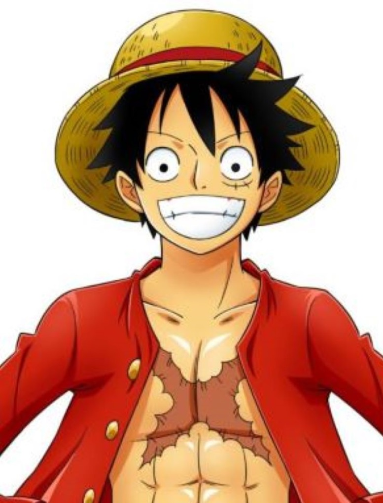
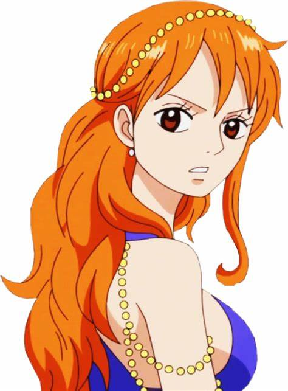
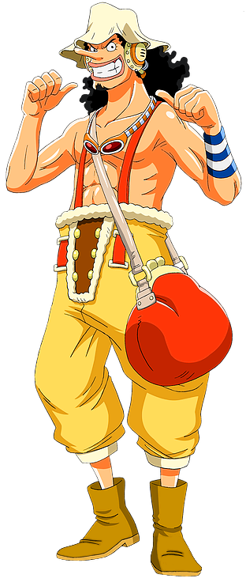
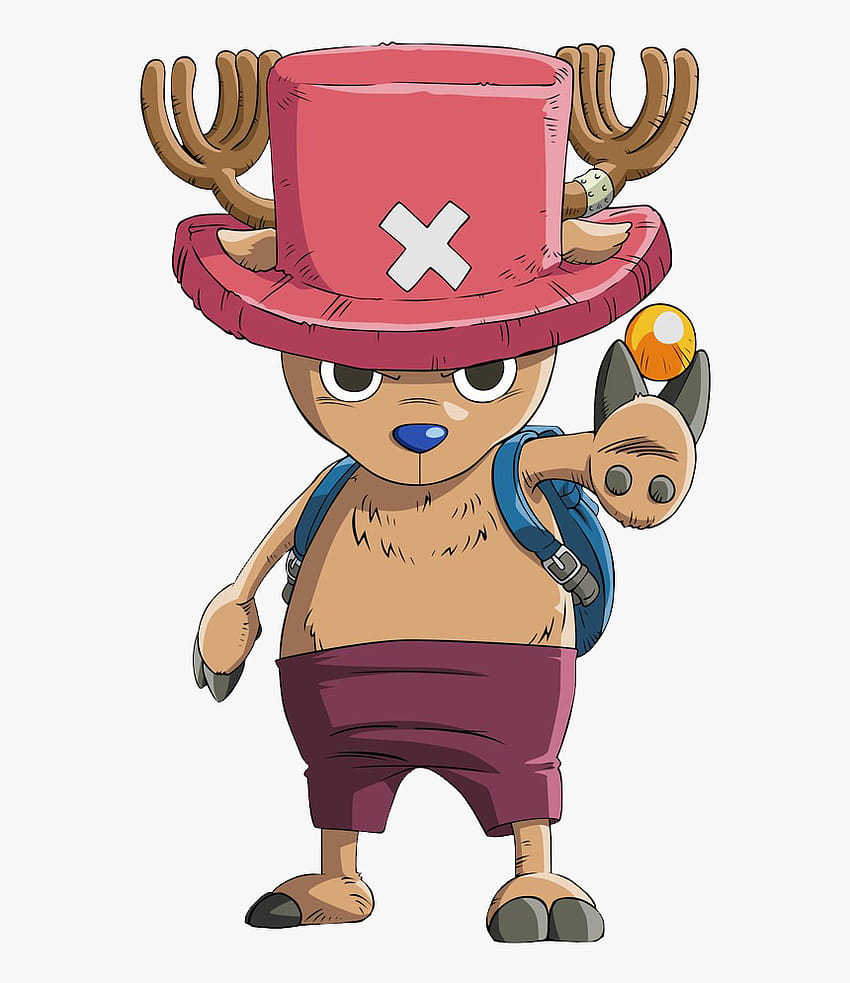
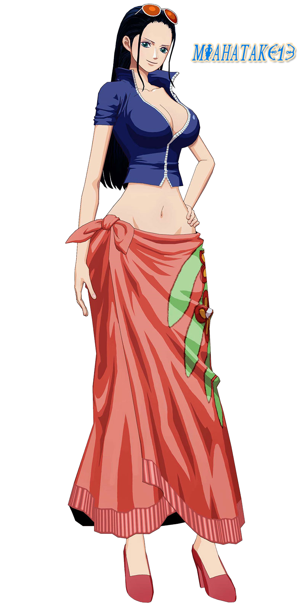
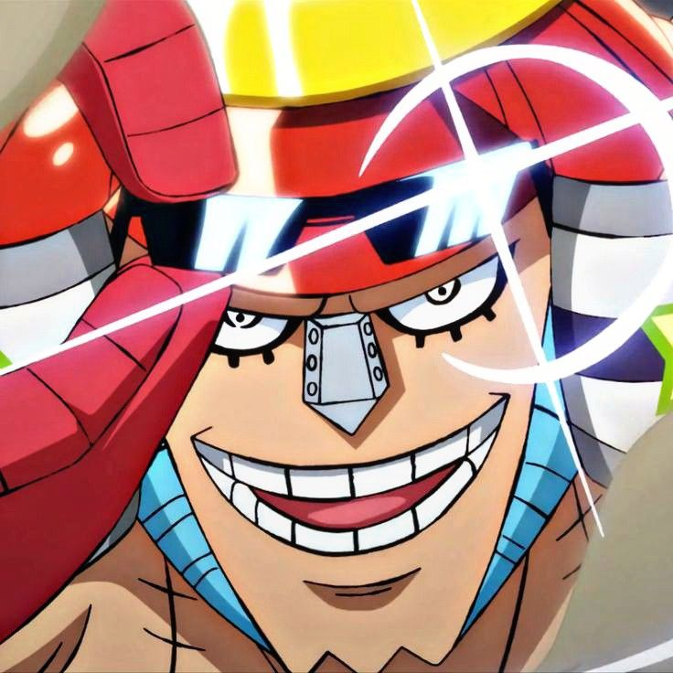
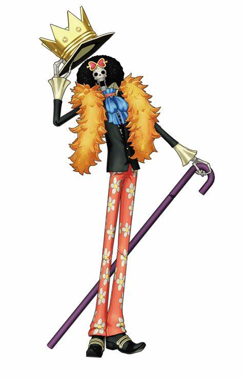
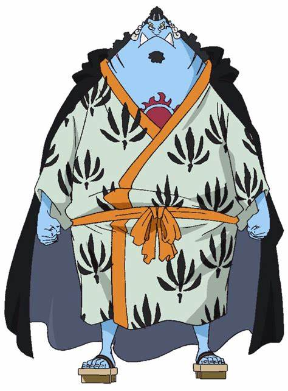

| Image |
Name |
Description |
|  |
Monkey D. Luffy |
Captain of the Straw Hat Pirates, aiming to become the Pirate King. |
 |
Roronoa Zoro |
The swordsman of the crew, who aims to become the world's greatest swordsman. |
|  |
Nami |
The navigator of the crew, with a dream to create a complete map of the world. |
|  |
Usopp |
The sniper of the crew, known for his lies and his sharpshooting skills. |
 |
Sanji |
The cook of the crew, who dreams of finding the All Blue, a legendary sea. |
|  |
Tony Tony Chopper |
The doctor of the crew, a reindeer who ate the Human-Human Fruit. |
|  |
Nico Robin |
The archaeologist of the crew, with a dream to uncover the true history of the world. |
|  |
Franky |
The shipwright of the crew, a cyborg who built the Thousand Sunny. |
|  |
Brook |
The musician of the crew, a skeleton who came back to life after eating the Revive-Revive Fruit. |
|  |
Jinbei |
The helmsman of the crew, a fish-man and former member of the Sun Pirates. |